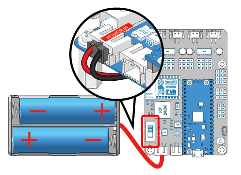
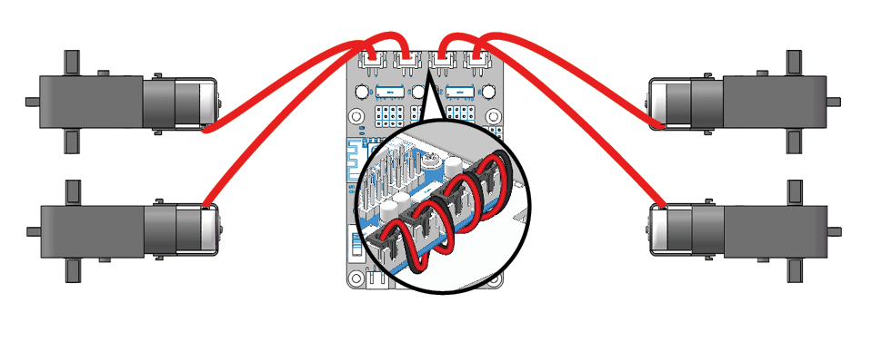
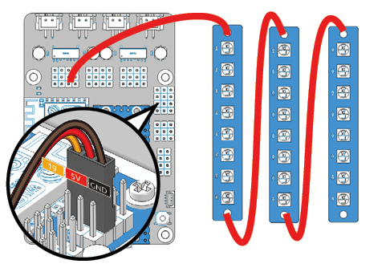
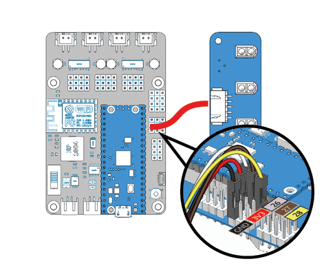
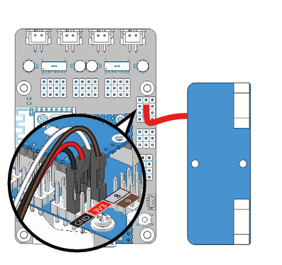

Test the Modules¶
Note
Make sure you have completed the settings in Setup Your Pico before proceeding with this chapter.
Under the test folder find test.py, a file specifically designed to test that Pico-4wd works, please open it with Thonny IDE.
为了让模块可以顺利工作，您需要为Pico RDP供电，并toggle the power switch。
Servo Zeroing During Assembly¶
This part applies to the *Assemble Ultrasonic Module in the chapter Assemble the Car (to be precise, step 2).
Note
The code below is abbreviated, please open the test.py file to use the code.
import pico_4wd as car
import time
def test_motor():
#...
def test_sonar():
#...
def test_servo():
for angle in range(0, 90):
print("angle:%s "%angle)
car.servo.set_angle(angle)
time.sleep(0.005)
for angle in range(90, -90, -1):
print("angle:%s "%angle)
car.servo.set_angle(angle)
time.sleep(0.005)
for angle in range(-90, 0):
print("angle:%s "%angle)
car.servo.set_angle(angle)
time.sleep(0.005)
def test_light():
#...
def test_grayscale():
#...
def test_speed():
#...
try:
# test_motor()
# test_sonar()
test_servo()
# test_light()
# test_grayscale()
# test_speed()
finally:
car.move("stop")
car.set_light_off()
There are 6 test functions in this file. We annotated five of them and executed test_servo() in try.
Its function is to make the servo axis deflect once and finally freeze at 0°.You can load an idle Servo Arm on the Servo shaft before executing the program to better observe whether the program is executed smoothly.
After the Servo is reset to zero, you can continue with the next installation steps.
Test All Modules¶
这一部分适用于组装前对模块进行可用性测试；或者在完成组装后，对Pico-4wd进行最终调试和维护。
Note
下方代码被简写，请打开``test.py``文件使用该代码）。
import pico_4wd as car
import time
def test_motor():
#...
def test_sonar():
#...
def test_servo():
#...
def test_light():
#...
def test_grayscale():
#...
def test_speed():
#...
try:
# test_motor()
# test_sonar()
test_servo()
# test_light()
# test_grayscale()
# test_speed()
finally:
car.move("stop")
car.set_light_off()
具体的使用步骤如下：
将
test_motor(),test_sonar(),test_servo(),test_light(),test_grayscale(),test_speed()这六行全部注释（To know about Comments here if you need）.将你需要测试的模块所对应的语句取消注释。如需测试电机，则uncomment
test_motor()。同一时间只能进行一个测试项。确认该模块与主控板已连线正确。
运行程序。
这些函数中的一些含有
while True循环，需要手动stop them。
每一个模块测试函数对应的接线与工作现象如下：
test_motor()
该函数会让四个motor按规律工作。如果你安装完毕，该函数会让Pico-4wd执行前进、后退、左转、右转、停止五个动作。
test_sonar()
该函数会让超声波模块检测其前方的障碍物，并打印障碍物的距离。
test_light()
该函数会让24个LED（3个RGB board上所有的）依次发出红光、依次发出绿光、依次发出蓝光、依次发出白光。
test_grayscale()
该函数会打印grayscale module三个探测头的值。使用时你应当将小车放在桌面， the probe should be about 5 mm from the ground. Normally, it will detect a value above 5000 on white ground. On black ground, it will detect values below 4000. On a cliff, it will detect a value below 1000 . (If the reading is 0 , it means that the probe does not detect the ground.)
test_speed()
该函数会根据模块的U型槽中码盘遮断光传递的频率来实现速度测试。你可以用卡纸在U型槽中快速晃动来模拟码盘旋转，以此简单检测speed module是否损毁。
如果你已经安装完成，该函数会让Pico-4wd变速前进，并将马达功率（百分比）及行驶速度(cm/s)打印出来。使用时你应当悬空小车，让马达转动不被阻碍。
Note
Thonny IDE中含有折线图工具，请在导航栏中点击 View > Plotter 打开它，以助于你查看打印值的变化情况。